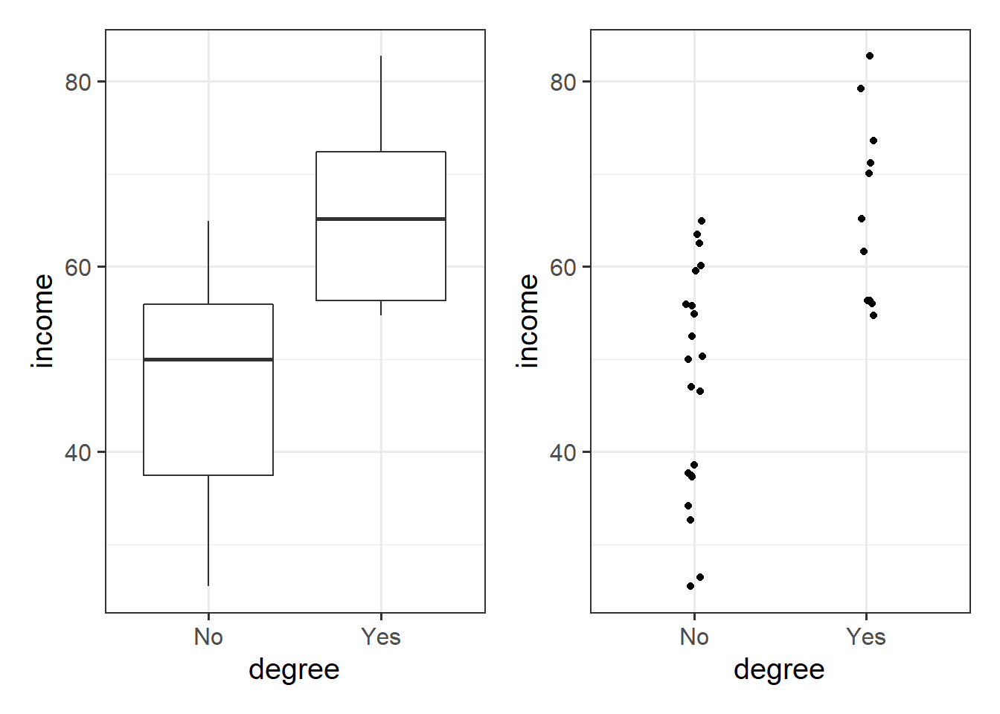
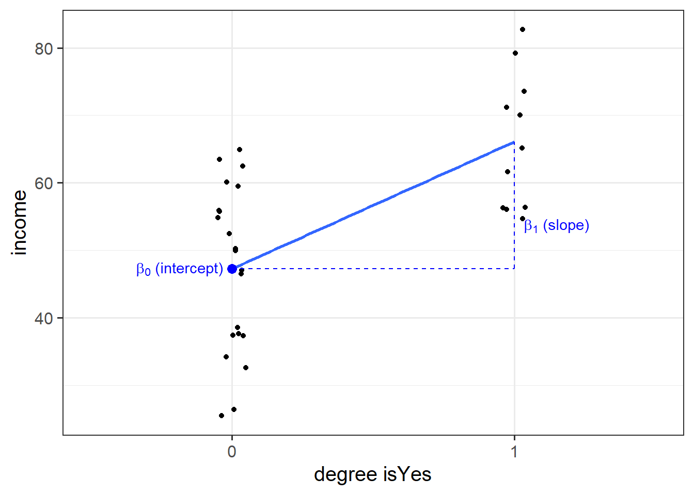

Fit a linear model to investigate how income varies with years of formal education.
library(tidyverse)
riverview <- read_csv(file = "https://uoepsy.github.io/data/riverview.csv")
head(riverview)
## # A tibble: 6 x 6
## education income seniority gender male party
## <dbl> <dbl> <dbl> <chr> <dbl> <chr>
## 1 8 37.4 7 male 1 Democrat
## 2 8 26.4 9 female 0 Independent
## 3 10 47.0 14 male 1 Democrat
## 4 10 34.2 16 female 0 Independent
## 5 10 25.5 1 female 0 Republican
## 6 12 46.5 11 female 0 Democrat
mdl <- lm(income ~ 1 + education, data = riverview)
mdl
##
## Call:
## lm(formula = income ~ 1 + education, data = riverview)
##
## Coefficients:
## (Intercept) education
## 11.321 2.651
The fitted model is:
\[
\widehat{Income} = 11.32 + 2.65 \times Education
\]
What is the proportion of the total variability in incomes explained by the linear relationship with education level?
Hint: The question asks to compute the value of \(R^2\).
The proportion of the total variability in incomes explained by the linear relationship with education level is given by R-squared.
Option 1
The R-squared coefficient is defined as:
\[
R^2 = \frac{SS_{Model}}{SS_{Total}} = 1 - \frac{SS_{Residual}}{SS_{Total}}
\]
In R we can write:
riverview_fitted <- riverview %>%
mutate(
income_hat = predict(mdl),
resid = income - income_hat
)
head(riverview_fitted)
## # A tibble: 6 x 8
## education income seniority gender male party income_hat resid
## <dbl> <dbl> <dbl> <chr> <dbl> <chr> <dbl> <dbl>
## 1 8 37.4 7 male 1 Democrat 32.5 4.92
## 2 8 26.4 9 female 0 Independent 32.5 -6.10
## 3 10 47.0 14 male 1 Democrat 37.8 9.20
## 4 10 34.2 16 female 0 Independent 37.8 -3.65
## 5 10 25.5 1 female 0 Republican 37.8 -12.4
## 6 12 46.5 11 female 0 Democrat 43.1 3.35
riverview_fitted %>%
summarise(
SSModel = sum( (income_hat - mean(income))^2 ),
SSTotal = sum( (income - mean(income))^2 )
) %>%
summarise(
RSquared = SSModel / SSTotal
)
## # A tibble: 1 x 1
## RSquared
## <dbl>
## 1 0.632
Option 2
##
## Call:
## lm(formula = income ~ 1 + education, data = riverview)
##
## Residuals:
## Min 1Q Median 3Q Max
## -15.809 -5.783 2.088 5.127 18.379
##
## Coefficients:
## Estimate Std. Error t value Pr(>|t|)
## (Intercept) 11.3214 6.1232 1.849 0.0743 .
## education 2.6513 0.3696 7.173 5.56e-08 ***
## ---
## Signif. codes: 0 '***' 0.001 '**' 0.01 '*' 0.05 '.' 0.1 ' ' 1
##
## Residual standard error: 8.978 on 30 degrees of freedom
## Multiple R-squared: 0.6317, Adjusted R-squared: 0.6194
## F-statistic: 51.45 on 1 and 30 DF, p-value: 5.562e-08
The output of summary() displays the R-squared value in the following line:
Multiple R-squared: 0.6317
For the moment, ignore “Adjusted R-squared.” We will come back to this later in the course.
Option 3
We can perform an ANalysis Of VAriance or, in short, ANOVA.
It simply means that we are examining/partitioning the total variability of a response variable.
The anova() function returns the sum of squares of interest in the column Sum Sq:
mdl_anova <- anova(mdl)
mdl_anova
## Analysis of Variance Table
##
## Response: income
## Df Sum Sq Mean Sq F value Pr(>F)
## education 1 4147.3 4147.3 51.452 5.562e-08 ***
## Residuals 30 2418.2 80.6
## ---
## Signif. codes: 0 '***' 0.001 '**' 0.01 '*' 0.05 '.' 0.1 ' ' 1
Consider the column Sum Sq.
The entry corresponding to education gives \(SS_{Model}\) = 4147.3, as education is the explanatory variable. The entry corresponding to Residuals gives \(SS_{Residual}\) = 2418.2.
# Because the column name Sum Sq has a space, we need to wrap it with backticks
SSModel <- mdl_anova$`Sum Sq`[1]
SSResidual <- mdl_anova$`Sum Sq`[2]
SSTotal <- SSModel + SSResidual
RSquared <- SSModel / SSTotal
RSquared
## [1] 0.6316828
Interpretation
Approximately 63% of the total variability in employee incomes is explained by the linear association with education level.
Perform a model utility test at the 5% significance level, by computing the F-statistic using its definition.
Hint: The relevant test-statistic is the F-statistic:
\[
\begin{split}
F = \frac{MS_{Model}}{MS_{Residual}} = \frac{SS_{Model} / 1}{SS_{Residual} / (n-2)}
\end{split}
\]
which compares the amount of variation in the response explained by the model to the amount of variation left unexplained in the residuals.
df1 <- 1
df2 <- nrow(riverview) - 2
f_star <- qf(0.95, df1, df2)
f_star
## [1] 4.170877
model_utility <- riverview_fitted %>%
summarise(
SSModel = sum( (income_hat - mean(income))^2 ),
SSResid = sum( resid^2 ),
MSModel = SSModel / 1,
MSResid = SSResid / df2,
FObs = MSModel / MSResid
)
model_utility
## # A tibble: 1 x 5
## SSModel SSResid MSModel MSResid FObs
## <dbl> <dbl> <dbl> <dbl> <dbl>
## 1 4147. 2418. 4147. 80.6 51.5
We performed an F-test of model utility at the 5% significance level, where \(F(1,30) = 51.45\).
As the observed \(F = 51.45\) is much larger than the critical value \(F^* = 4.17\), we have strong evidence to reject the null hypothesis that the model is ineffective.
Alternatively, we can compute the p-value:
pvalue <- 1 - pf(model_utility$FObs, df1, df2)
pvalue
## [1] 5.562116e-08
The value 5.562116e-08 simply means \(5.56 \times 10^{-8}\), so it’s a really small number.
We performed an F-test of model utility at the 5% significance level, where \(F(1,30) = 51.45, p<.001\).
The p-value (< .001) is much lower than the specified significance level, meaning that we have very strong evidence against the null hypothesis.
With some algebra we can also show that:
\[
F = \frac{R^2 / 1}{(1 - R^2) / (n - 2) } = \frac{R^2 / df_{Model}}{(1 - R^2) / df_{Residual} }
\]
Proof:
\[
\begin{aligned}
F = \frac{SS_{Model} / 1}{SS_{Residual} / (n - 2)}
= \frac{\frac{SS_{Model}}{SS_{Total}}}{\frac{SS_{Residual}}{SS_{Total}} \cdot \frac{1}{(n - 2)}}
= \frac{R^2 / 1}{(1 - R^2) / (n - 2)}
\end{aligned}
\]
Look at the output of summary(mdl) and anova(mdl).
For each output, identify the relevant information to conduct an F-test against the null hypothesis that the model is ineffective at predicting income using education level.
##
## Call:
## lm(formula = income ~ 1 + education, data = riverview)
##
## Residuals:
## Min 1Q Median 3Q Max
## -15.809 -5.783 2.088 5.127 18.379
##
## Coefficients:
## Estimate Std. Error t value Pr(>|t|)
## (Intercept) 11.3214 6.1232 1.849 0.0743 .
## education 2.6513 0.3696 7.173 5.56e-08 ***
## ---
## Signif. codes: 0 '***' 0.001 '**' 0.01 '*' 0.05 '.' 0.1 ' ' 1
##
## Residual standard error: 8.978 on 30 degrees of freedom
## Multiple R-squared: 0.6317, Adjusted R-squared: 0.6194
## F-statistic: 51.45 on 1 and 30 DF, p-value: 5.562e-08
The relevant row is the following:
F-statistic: 51.45 on 1 and 30 DF, p-value: 5.562e-08
Instead, the anova() output is:
## Analysis of Variance Table
##
## Response: income
## Df Sum Sq Mean Sq F value Pr(>F)
## education 1 4147.3 4147.3 51.452 5.562e-08 ***
## Residuals 30 2418.2 80.6
## ---
## Signif. codes: 0 '***' 0.001 '**' 0.01 '*' 0.05 '.' 0.1 ' ' 1
And the relevant entries are:
- the
Df column, which contains the degrees of freedom;
F value = 51.452, which is the F-statistic;Pr(>F) = 5.562e-08 = \(5.562 \times 10^{-8}\), which is the p-value.
We might write up the test results as,
We performed an F-test for the overall significance of the regression, \(F(1, 30) = 51.45, p < .001\).
The large F-statistic leads to a very small p-value (\(<.001\)), meaning that we have very strong evidence against the null hypothesis that the model is ineffective.
In other words, the data provide strong evidence that education is an effective predictor of income.
Consider the F value output of anova(mdl) and the t value for education returned by summary(mdl)
F value = 51.452
t value = 7.173
Do you notice any relationship between the F-statistic for overall model utility and the t-statistic for \(H_0: \beta_1 = 0\)?
In simple linear regression only, the F-statistic for overall model significance is equal to the square of the t-statistic for \(H_0: \beta_1 = 0\).
You can check that the squared t-statistic is equal, up to rounding error, to the F-statistic:
\[
t^2 = F \\
7.173^2 = 51.452
\]
Optional: Equivalence of t-test for the slope and model utility F-test in SLR.
Here we will show the equivalence of the F-test for model effectiveness and t-test for the slope.
Recall the formula of the sum of squares due to the model. We will rewrite it in an equivalent form below:
\[
\begin{aligned}
SS_{Model} &= \sum_i (\hat y_i - \bar y)^2 \\
&= \sum_i (\hat \beta_0 + \hat \beta_1 x_i - \bar y)^2 \\
&= \sum_i (\bar y - \hat \beta_1 \bar x + \hat \beta_1 x_i - \bar y)^2 \\
&= \sum_i (\hat \beta_1 (x_i - \bar x))^2 \\
&= \hat \beta_1^2 \sum_i (x_i - \bar x)^2
\end{aligned}
\]
The F-statistic is given by:
\[
\begin{aligned}
F = \frac{SS_{Model} / 1}{SS_{Residual} / (n - 2)}
= \frac{\hat \beta_1^2 \sum_i (x_i - \bar x)^2}{\hat \sigma^2}
= \frac{\hat \beta_1^2 }{\hat \sigma^2 / \sum_i (x_i - \bar x)^2}
\end{aligned}
\]
Now recall the formula of the t-statistic,
\[
t = \frac{\hat \beta_1}{SE(\hat \beta_1)} = \frac{\hat \beta_1}{\hat \sigma / \sqrt{\sum_i (x_i - \bar x)^2}}
\]
It is evident that the latter is obtained as the square root of the former.
Back to regression coefficients
Question 6
Compute the average education level and the average income in the sample.
Use the predict() function to compute the predicted income for those with average education level.
What do you notice?
Solution
Sample means:
stats <- riverview %>%
summarise(
mean_education = mean(education),
mean_income = mean(income)
)
stats
## # A tibble: 1 x 2
## mean_education mean_income
## <dbl> <dbl>
## 1 16 53.7
Prediction:
query <- tibble(education = stats$mean_education)
query
## # A tibble: 1 x 1
## education
## <dbl>
## 1 16
predict(mdl, newdata = query)
## 1
## 53.74212
The predicted average income for those having average education level is equal to the average income in the sample.
Question 7
Let’s formalise the previous question using symbols.
Consider the fitted model \(\hat{y} = \hat \beta_0 + \hat \beta_1 x\).
What is the predicted response for an individual having an explanatory variable at the average level \(\bar{x}\)?
Hint: Substitute the formula of \(\hat \beta_0\) into the equation of the fitted model.
Solution
We require the prediction at \(x = \bar{x}\), that is:
\[
\hat{y} = \hat \beta_0 + \hat \beta_1 \bar{x}
\]
Recall the formula for the fitted intercept: \(\hat \beta_0 = \bar{y} - \hat \beta_1 \bar{x}\). Let’s substitute it into the equation:
\[
\begin{split}
\hat{y} &= \hat \beta_0 + \hat \beta_1 \bar{x} \\
&= \bar{y} - \hat \beta_1 \bar{x} + \hat \beta_1 \bar{x} \\
&= \bar{y}
\end{split}
\]
This highlights an important property of the fitted regression line: it always passes through the point of averages \((\bar x, \bar y)\).
Intuitively, what would be your prediction \(\hat y\) when \(x\) equals \(\bar{x}\)? If you guessed \(\bar{y}\) you’re on track!
Binary predictors
Let’s suppose that instead of having measured education in years, we had data instead on “Obtained College Degree: Yes/No.” Our explanatory variable would be binary categorical (think back to our discussion of types of data).
Let us pretend that everyone with >18 years of education has a college degree:
#create new variable called 'degree', where those over age 18 are allocated to Yes condition, and those under 18 to No.
riverview <-
riverview %>%
mutate(
degree = ifelse(education > 18, "Yes", "No")
)
We may then plot our relationship as a boxplot. If you want to see the individual points, you could always “jitter” them (right-hand plot below)
ggplot(riverview, aes(x = degree, y = income)) +
geom_boxplot() +
ggplot(riverview, aes(x = degree, y = income)) +
geom_jitter(height=0, width=.05)

Binary predictors in linear regression
We can include categorical predictors in a linear regression, but the interpretation of the coefficients is very specific. Whereas we talked about coefficients being interpreted as “the change in \(y\) associated with a 1-unit increase in \(x\),” for categorical explanatory variables, coefficients can be considered to examine differences in group means. However, they are actually doing exactly the same thing - the model is simply translating the levels (like “Yes”/“No”) in to 0s and 1s!
So while we may have in our dataframe a categorical predictor like the middle column “degree,” below, what is inputted into our model is more like the third column, “isYes.”
## # A tibble: 32 x 3
## income degree isYes
## <dbl> <chr> <dbl>
## 1 37.7 No 0
## 2 37.4 No 0
## 3 26.4 No 0
## 4 73.5 Yes 1
## 5 65.1 Yes 1
## 6 50.0 No 0
## 7 55.8 No 0
## 8 59.5 No 0
## 9 60.1 No 0
## 10 70.0 Yes 1
## # ... with 22 more rows
Our coefficients are just the same as before. The intercept is where our predictor equals zero, and the slope is the change in our outcome variable associated with a 1-unit change in our predictor.
However, “zero” for this predictor variable now corresponds to a whole level. This is known as the “reference level.” Accordingly, the 1-unit change in our predictor (the move from “zero” to “one”) corresponds to the difference between the two levels.

Standardization
Question 8
Add to the riverview dataset two variables called z_education and z_income representing the standardized education and income variables, respectively.
Without using R, if you were to fit a linear regression model using the standardized response and standardized predictor, what would the intercept be?
Hint: Recall the formula for the \(z\)-score:
\[
z_x = \frac{x - \bar{x}}{s_x}, \qquad z_y = \frac{y - \bar{y}}{s_y}
\]
Solution
riverview <- riverview %>%
mutate(
z_education = (education - mean(education)) / sd(education),
z_income = (income - mean(income)) / sd(income)
)
Check that they are standardized:
riverview %>%
summarise(
M_z_education = mean(z_education), SD_z_education = sd(z_education),
M_z_income = mean(z_income), SD_z_income = sd(z_income)
)
## # A tibble: 1 x 4
## M_z_education SD_z_education M_z_income SD_z_income
## <dbl> <dbl> <dbl> <dbl>
## 1 1.73e-18 1 -1.28e-16 1
A standardized variable has mean 0 and standard deviation equal to 1.
We can substitute this in the formula of the estimated intercept:
\[
\hat \beta_0 = \bar{y} - \hat \beta_1 \bar{x} = 0 - \hat \beta_1 0 = 0
\]
The intercept of the linear model between the standardized variables is zero — that is, the regression line passes through the origin of the graph.
But wait… The origin is also the average of \(z_x\) and the average of \(z_y\) as they are standardized. In symbols \((0, 0) = (\bar{z}_x, \bar{z}_y)\).
We expected the fitted line to pass through the point of averages — in this case, the origin.
Question 9
Using R, fit the regression model using the standardized response and explanatory variables.
What is the slope equal to?
Solution
Linear model for standardized variables:
mdl_z <- lm(z_income ~ 1 + z_education, data = riverview)
summary(mdl_z)
##
## Call:
## lm(formula = z_income ~ 1 + z_education, data = riverview)
##
## Residuals:
## Min 1Q Median 3Q Max
## -1.0863 -0.3974 0.1435 0.3523 1.2629
##
## Coefficients:
## Estimate Std. Error t value Pr(>|t|)
## (Intercept) -8.055e-18 1.091e-01 0.000 1
## z_education 7.948e-01 1.108e-01 7.173 5.56e-08 ***
## ---
## Signif. codes: 0 '***' 0.001 '**' 0.01 '*' 0.05 '.' 0.1 ' ' 1
##
## Residual standard error: 0.6169 on 30 degrees of freedom
## Multiple R-squared: 0.6317, Adjusted R-squared: 0.6194
## F-statistic: 51.45 on 1 and 30 DF, p-value: 5.562e-08
Correlation coefficient of original variables:
riverview %>%
select(education, income) %>%
cor()
## education income
## education 1.0000000 0.7947847
## income 0.7947847 1.0000000
The slope of the standardized variables is equal to the correlation between the original variables.
Question 10
Interpret the slope of the standardized variables.
Solution
For every standard deviation increase in education, income increases on average by 0.79 standard deviations.